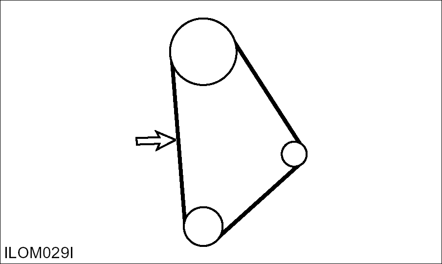
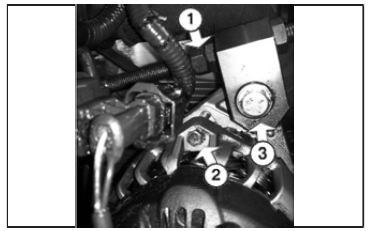

Belts – Check, Adjust  Typical Example Check the condition and adjustment of the belt. Correct adjustment allows 10 mm (3/8 inch) deflection under 110 N (25 lb) of force.  Notice: Failure to loosen the alternator mounting bolt (2) will cause excessive stress and break the alternator mounting ear. To adjust the tension of the alternator drive belt, loosed the adjustment bolts (1) and (3) and move the belt, as necessary. Parent topic: Every 500 Service Hours or 3 Months